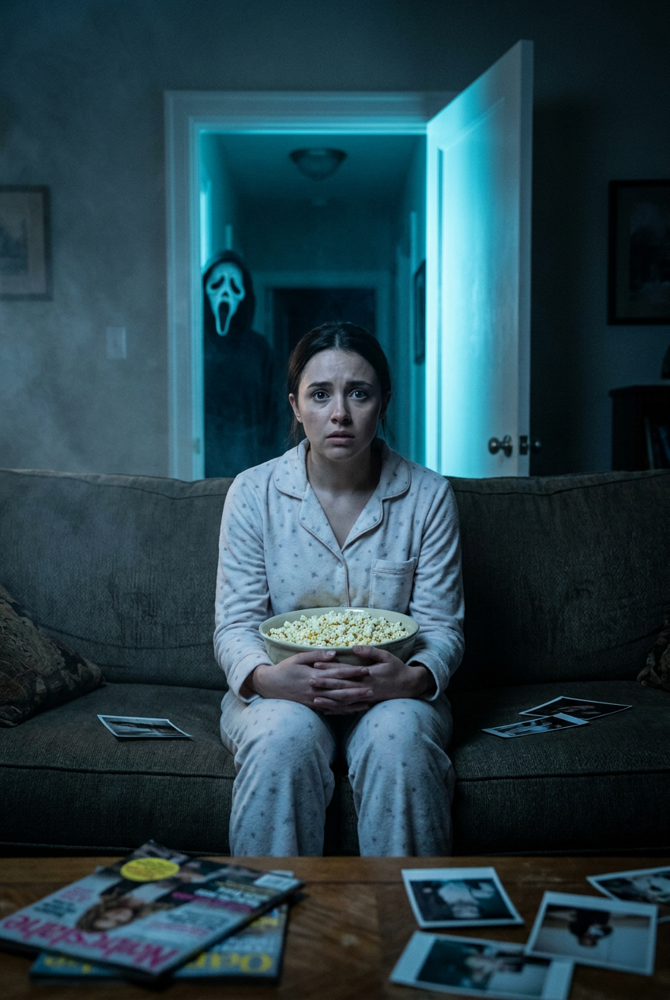
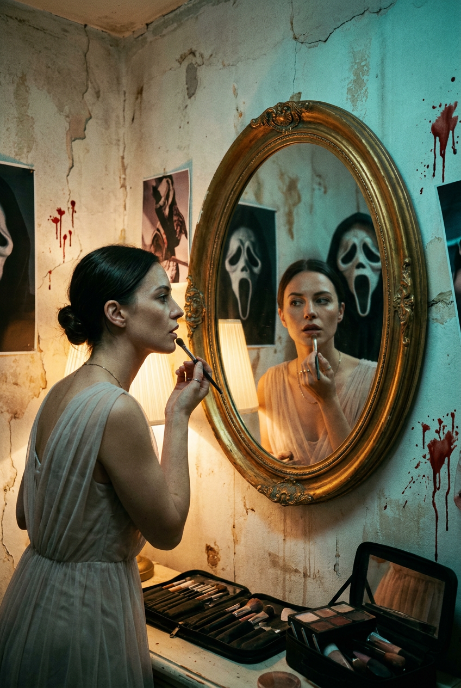
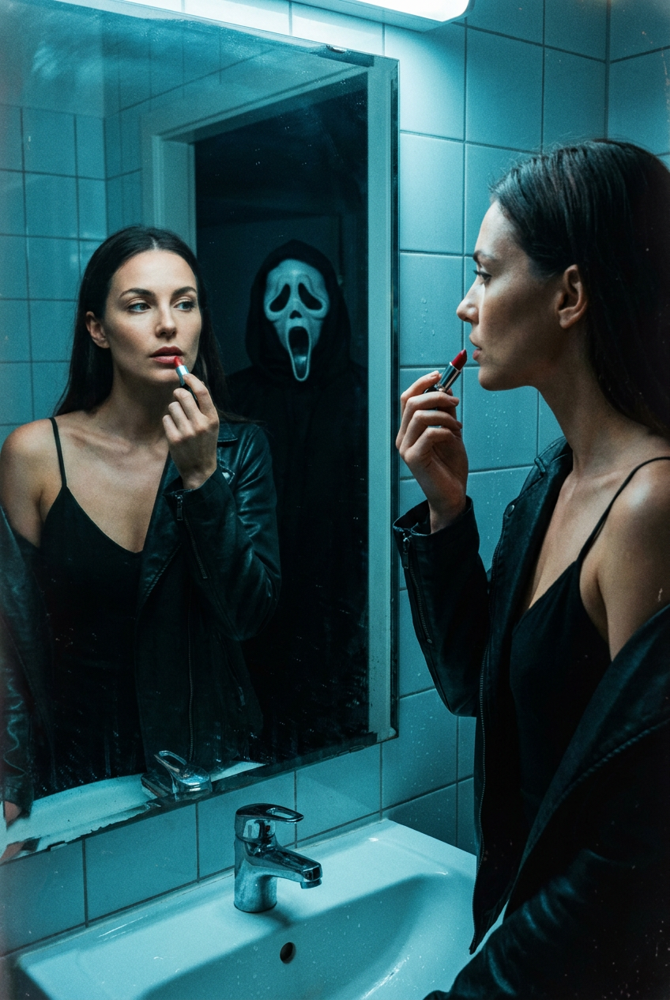
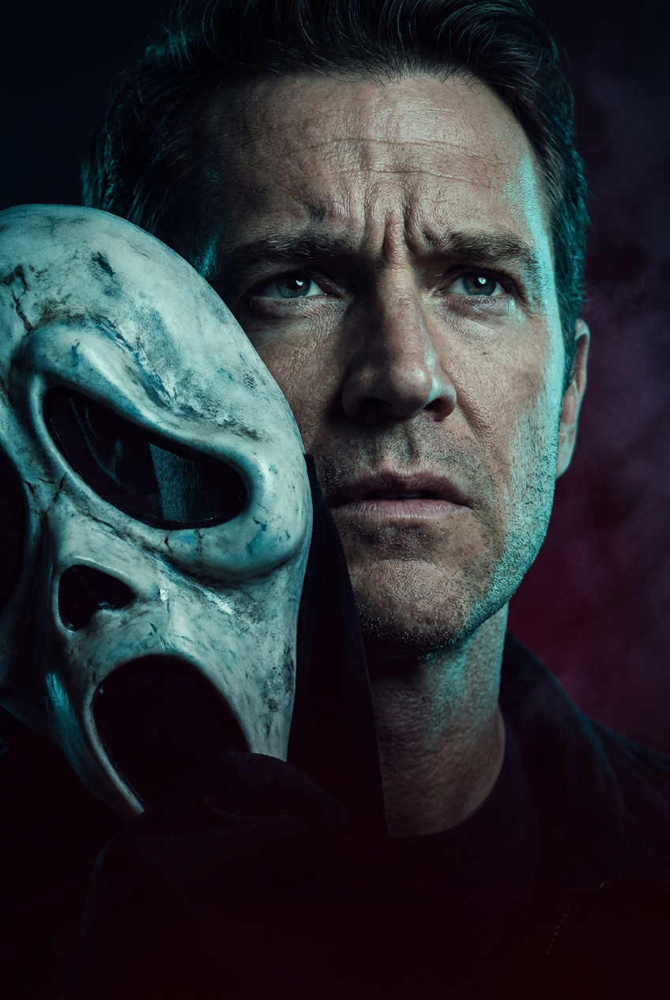
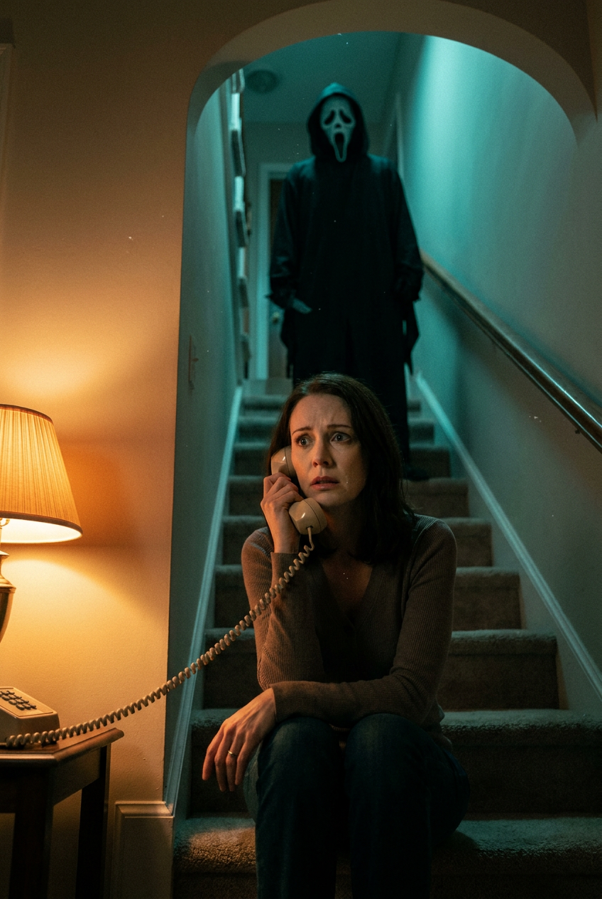
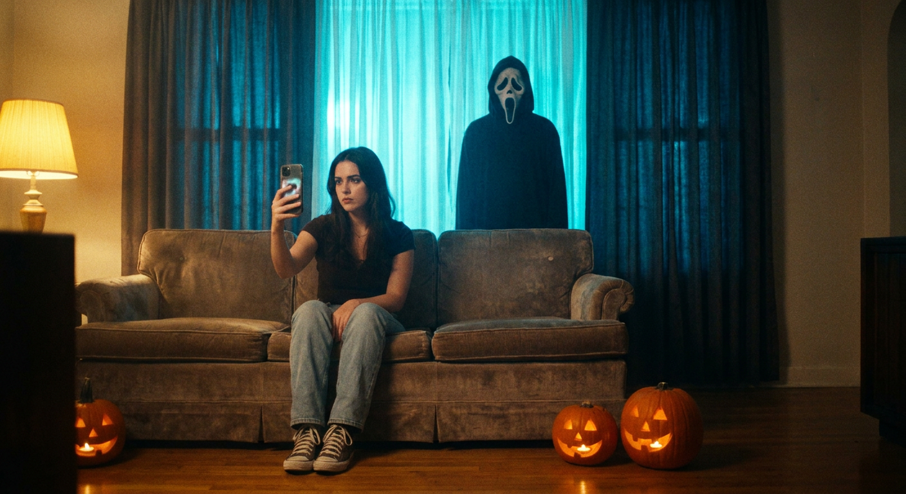
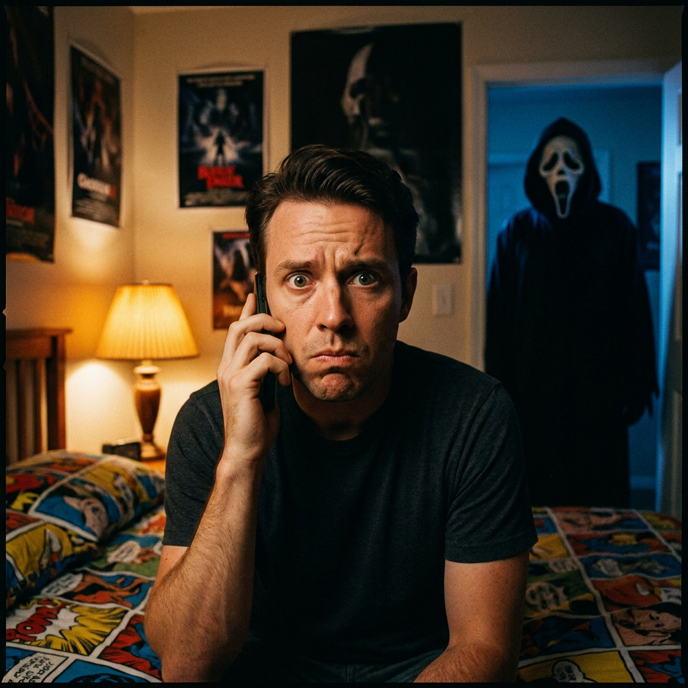
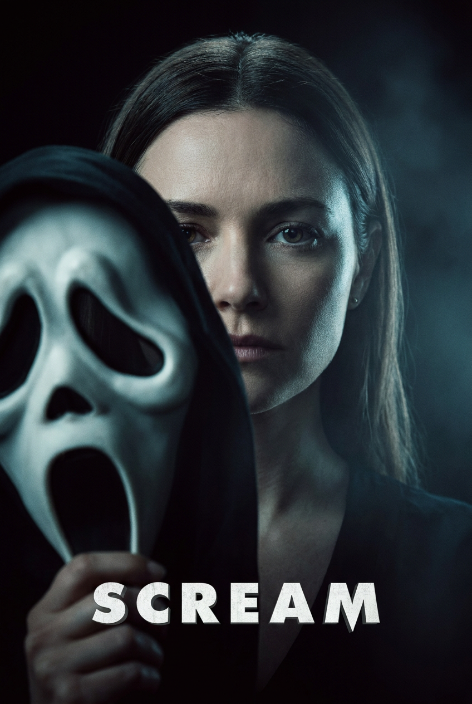
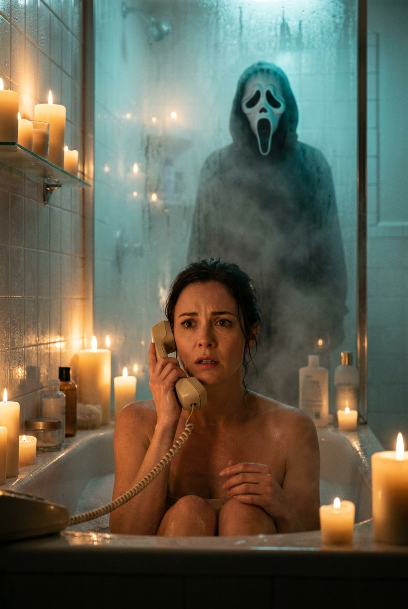
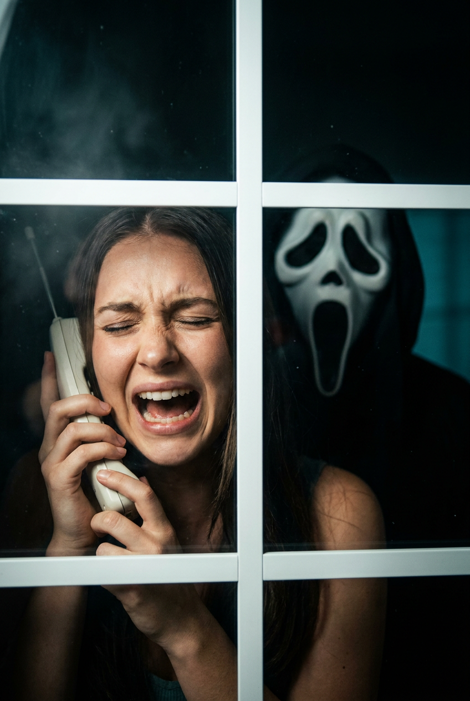

ИИ-фото в стиле «Крик»: 10 промптов для нейросети

Обычный портрет нейросеть часто превращает в безликий кадр: эмоции неубедительные, руки ломаются, а хоррор выглядит как случайная тёмная сцена. Хороший промпт задаёт не только внешность героя, но и точку съёмки, свет, реквизит, выражение лица и место угрозы.
В подборке — 10 сценариев для ИИ-фото в духе «Крика»: ночная гостиная с попкорном, зеркало в гримёрной, ванная, лестница, телефонный звонок и пугающее окно. Все промпты рассчитаны на вертикальный киношный кадр с эстетикой слэшеров 90-х.
Как сгенерировать такое фото: пошагово
Нужен снимок анфас при ровном свете, лицо в кадре целиком, без тёмных очков и головных уборов. Разрешение от 1000 пикселей по короткой стороне. Чем чётче исходник, тем точнее модель повторит черты.
Выберите сценарий ниже и нажмите «Копировать» — текст уйдёт в буфер целиком, вместе с командой сохранения внешности. Эта команда стоит первой строкой и отвечает за то, чтобы на выходе было ваше лицо, а не случайное.
Кнопка «Сгенерировать» рядом с каждым промптом открывает модель в новой вкладке. Nano Banana Pro работает с референсом лица — в отличие от моделей, которые генерируют портрет с нуля и узнаваемость теряют.
Промпт — в поле ввода, портрет — через загрузку референса. Порядок значения не имеет, но без референса команда сохранения внешности работать не будет: модели нечего сохранять.
Для сторис и ленты берите 9:16, для превью и обложек — 4:3. Первый результат редко идеален: если поза или свет ушли не туда, поправьте соответствующую часть промпта и запустите заново. Обычно хватает двух-трёх итераций.
10 промптов для генерации
1. Попкорн в тёмной гостиной
Строго сохранить внешность по загруженному референсу: черты лица, пропорции, мимику и текстуру кожи без изменений. Вертикальный фотореалистичный кино-кадр с детализацией постера, 35mm film look, мягкое зерно и глубокие тени. В центре тёмной гостиной девушка сидит на диване, на ней светлая пижама с мелким звёздным принтом. Она держит большую миску с попкорном у живота; часть попкорна хорошо видна. Лицо спокойное, но тревожное: взгляд направлен прямо в объектив, будто героиня внезапно поняла, что за ней наблюдают. На заднем плане распахнута дверь или тёмный проём, откуда льётся холодный голубой свет. В глубине проёма едва различима бело-серо-голубая маска призрачного убийцы из «Крика». В нижней части кадра виден край журнального или кофейного столика, на нём хаотично лежат журналы, фотографии и карточки. Драматичный контраст, кинематографическая цветокоррекция, реалистичная кожа и ткань. Используй лицо с загруженного референса, сохрани индивидуальные черты, форму глаз, бровей, носа, губ, овал лица, естественную мимику и пропорции.
2. Зеркало в старой гримёрке

Строго сохранить внешность по загруженному референсу: черты лица, пропорции, мимику и текстуру кожи без изменений. Вертикальный постерный кадр в фотореализме, эстетика хоррора 90-х, объектив 35 мм, плёночное зерно, киношный color grading и лёгкое виньетирование. Действие происходит в маленькой гримёрной или подсобке с облупившейся штукатуркой, трещинами и тёмными пятнами на стенах. В центре стоит большое овальное зеркало в потёртой золотистой раме. Перед ним женщина показана в профиль или в три четверти и слегка наклоняется к отражению, словно поправляет макияж. У губ или подбородка она держит косметический карандаш, кисть либо подносит к лицу руку. На ней светлое полупрозрачное платье или драпированная накидка. В зеркале отражение выглядит тревожно и чуть менее естественно, создавая ощущение чужого присутствия. Лицо напряжённое, взгляд настороженный, макияж аккуратный. Используй внешность с референса без изменения индивидуальных черт, формы глаз, бровей, носа, губ и овала лица; сохрани естественные пропорции. Высокая детализация кожи, волос, ткани и старого зеркального стекла.
3. Помада перед зеркалом

Строго сохранить внешность по загруженному референсу: черты лица, пропорции, мимику и текстуру кожи без изменений. Вертикальный фотореалистичный кадр в духе постера слэшера 90-х: cinematic horror, 35mm film look, заметное плёночное зерно, лёгкая виньетка, высокая детализация волос и лица. Съёмка происходит в ванной комнате у большого зеркала. Справа в кадре девушка видна в профиль и смотрит на своё отражение. Слева, в зеркале, она показана фронтально, композиция построена через плечо и напоминает тревожную зеркальную симметрию. У героини выразительные глаза и естественный макияж. На ней чёрное платье или топ на тонких бретелях, поверх — чёрная кожаная куртка или накидка; допускаются кожаные перчатки, но руки и пальцы должны оставаться анатомически правильными. Красную помаду или карандаш она подносит к губам, будто собирается завершить макияж, но застыла, заметив что-то в отражении. Холодный верхний свет, влажные блики, глубокие тени и напряжённая пауза. Используй лицо с загруженного референса, точно сохрани его черты, мимику и пропорции.
4. Лицо рядом с маской

Строго сохранить внешность по загруженному референсу: черты лица, пропорции, мимику и текстуру кожи без изменений. Вертикальный кинопостер в эстетике мрачного слэшера 90-х. На переднем плане крупно показан мужчина, слегка повернувшийся к камере; у него реалистичная кожа и напряжённый взгляд исподлобья. Рядом с его лицом, с левой стороны композиции, почти вплотную к объективу находится бело-серо-голубая маска призрачного убийцы типа Ghostface с характерными вытянутыми прорезями для глаз и рта. Маска доминирует в переднем плане и частично перекрывает лицо мужчины, создавая ощущение опасной близости. Фон почти чёрный, с бордовым и фиолетовым градиентом, лёгкой дымкой и едва заметной фактурой. На маске лежит холодный cyan/teal-контровой свет, лицо подсвечено сбоку, тени остаются глубокими. Фотореализм, постерная детализация, драматичный контраст, 35mm film look, кинематографическая цветокоррекция. Используй внешность мужчины с референса: сохрани форму глаз, бровей, носа, губ, овал лица, мимику и естественные пропорции без стилизации.
5. Звонок на лестнице

Строго сохранить внешность по загруженному референсу: черты лица, пропорции, мимику и текстуру кожи без изменений. Вертикальный фотореалистичный кино-кадр с эстетикой хоррора 90-х, 35mm film look и кинематографическим цветогрейдингом. Место действия — лестничный пролёт в многоэтажном доме или таунхаусе: ковровая дорожка, мягкие стены светлого оттенка, узкая площадка и тёмный проём наверху. В нижней части изображения женщина сидит или присела на ступенях, корпус немного развёрнут к камере. Она прижимает к уху трубку проводного телефона, а длинный провод уходит вниз и влево, образуя заметную ведущую линию. Лицо бледное, глаза широко раскрыты, губы напряжены: героиня услышала угрозу и пытается понять, откуда она идёт. На верхней площадке, в дверном проёме, неподвижно стоит фигура в тёмном капюшоне и маске призрачного убийцы. Часть силуэта скрыта тенью, но маска читается. Холодный свет на лестнице, мягкая глубина резкости, тревожная тишина, плёночное зерно. Используй лицо с референса, сохрани индивидуальные черты и естественные пропорции.
6. Селфи у закрытых штор

Строго сохранить внешность по загруженному референсу: черты лица, пропорции, мимику и текстуру кожи без изменений. Фотореалистичный вертикальный кадр в кинематографическом стиле хоррор-постера 90-х, 35mm film look, реалистичная фактура кожи, мягкое зерно и контрастная цветокоррекция. В центре гостиной девушка сидит на диване, немного откинувшись назад; посадка уверенная, но выражение лица настороженное. Одной рукой она держит смартфон у лица, снимая зеркальное селфи: телефон частично закрывает лоб и щёку, видны его объектив и край экрана. Вторая рука лежит на колене. На героине тёмный верх, светлые джинсы и нейтральные кеды или кроссовки. За спиной висят крупные тёмно-синие шторы, изнутри подсвеченные ярким циановым или бирюзовым светом. Прямо по центру за тканью угадывается высокая фигура в маске Ghostface; силуэт виден сквозь складки, но не раскрывается полностью. Сочетай холодное свечение штор с тёмными тенями комнаты, добавь лёгкую дымку и виньетирование. Сохрани лицо с загруженного референса, его мимику, черты и пропорции.
7. Телефон в спальне

Строго сохранить внешность по загруженному референсу: черты лица, пропорции, мимику и текстуру кожи без изменений. Вертикальный или квадратный фотореалистичный кадр в стиле 90s slasher poster, cinematic horror, 35mm film look, плёночное зерно и умеренное виньетирование. В спальне мужчина сидит на кровати, корпус немного развёрнут к камере. Он держит у уха трубку проводного телефона, а второй рукой опирается на край кровати. Выражение лица передаёт сильный испуг: глаза широко раскрыты, губы сжаты, взгляд направлен прямо или чуть в сторону, будто собеседник сообщил нечто невозможное. На заднем плане слева стоит торшер или настольная лампа с абажуром тёплого янтарного цвета. Кровать застелена ярким узорчатым покрывалом, вокруг — тёмная спальня с мягкими неясными деталями. Тёплый свет лампы контрастирует с холодными тенями и создаёт эффект ночного звонка. Добавь реалистичные складки ткани, естественную кожу, глубокую перспективу и тревожную атмосферу. Используй лицо мужчины с референса, не меняя форму глаз, бровей, носа, губ, овал лица, мимику и пропорции.
8. Женщина и маска крупным планом

Строго сохранить внешность по загруженному референсу: черты лица, пропорции, мимику и текстуру кожи без изменений. Вертикальный кино-постер с крупным планом женщины на почти полностью чёрном фоне. Она выглядит спокойно, но во взгляде чувствуется напряжение. В левой части композиции, прямо перед объективом, героиня держит бело-чёрную маску из фильма «Крик»; маска находится очень близко к камере и частично закрывает её лицо. Главный акцент — на контрасте живого взгляда и неподвижного пугающего выражения маски. Сделай очень малую глубину резкости: передний план слегка смягчён, лицо остаётся читаемым, задний фон растворяется в темноте. Используй мягкий холодный ключевой свет с bluish/teal-оттенком, боковую и контровую подсветку, глубокий chiaroscuro, слабую дымку в воздухе и деликатное виньетирование. Цветовая палитра синевато-зелёная, с приглушёнными тенями и кинематографическим контрастом. Фотореализм, 35mm film look, детализация постера. Сохрани внешность с загруженного референса, включая индивидуальные черты, мимику и пропорции лица.
9. Телефон в ванне

Строго сохранить внешность по загруженному референсу: черты лица, пропорции, мимику и текстуру кожи без изменений. Вертикальный фотореалистичный кадр в эстетике cinematic horror, 35mm film look и плёночным зерном. Сцена происходит в ванной комнате, залитой тёплым, почти сказочным светом свечей. В воздухе висит пар после горячего душа: дальние детали скрыты мягкой вуалью, вокруг плеч и стен заметна влажная дымка. На переднем плане женщина сидит в наполненной ванне; тело видно до плеч или немного ниже талии. Она держит у уха трубку проводного телефона, спиральный провод уходит вниз по кадру. Голова слегка наклонена, взгляд направлен перед собой или чуть в сторону камеры. На лице тревога и шок: губы приоткрыты, брови немного подняты, поза напряжённая. Вторая рука расслаблена у поверхности воды. Свечи дают янтарные блики на коже, а углы ванной остаются в густых тенях. Добавь реалистичные отражения, пар, воду и мягкое виньетирование. Используй лицо с референса без изменения его характерных черт и пропорций.
10. Крик за оконной рамой

Строго сохранить внешность по загруженному референсу: черты лица, пропорции, мимику и текстуру кожи без изменений. Вертикальный портретный кадр с фотореалистичной подачей, 35mm film look, плёночным зерном и лёгким виньетированием. Девушка находится внутри тёмного помещения и видна через белую оконную или дверную раму с вертикальной и горизонтальной перекладиной. Рама образует крест и делит изображение на отдельные секции, усиливая ощущение ловушки. Героиня повернулась к камере и выглядывает в небольшое окно, крича от ужаса; глаза закрыты, лицо искажено пугающей, почти неестественной эмоцией. Слева, ближе к раме, она держит винтажный беспроводной стационарный телефон без логотипов и читаемых надписей. Руки и пальцы анатомически корректные. В стекле заметно тревожное отражение: силуэт маски Ghostface или тёмная фигура появляется не прямо за героиней, а в стороне, чтобы сохранить неопределённость. Снаружи холодный голубой свет, внутри почти чёрные тени, лёгкая дымка на стекле и напряжённый контраст. Используй лицо с загруженного референса, сохрани индивидуальные черты и пропорции.
Что важно учесть в этом стиле
У хоррора в духе «Крика» работает не темнота сама по себе, а понятный источник тревоги. В промпте лучше указывать, где находится маска, кто смотрит в камеру и что герой делает в момент угрозы. Телефон у уха, отражение в зеркале или силуэт за шторами сразу создают сюжет.
Для киношного результата задавайте вертикальный формат, объектив 35 мм, плёночное зерно, контровой свет и ограниченную палитру. Холодный cyan/teal хорошо отделяет маску от фона, а тёплый свет свечи или лампы добавляет контраст. Если нужен узнаваемый человек, загружайте качественный референс анфас и не перегружайте сцену лишними персонажами.
Идеи для вариаций
- Замените гостиную на пустой кинозал с включённым экраном и силуэтом в последнем ряду.
- Перенесите сцену с телефоном в прачечную, лифт или гостиничный коридор.
- Добавьте дождь на стекле, мигающую вывеску или отражение маски в луже.
- Попросите нейросеть сделать кадр через дверной глазок, камеру наблюдения или зеркало автомобиля.
- Смените настроение: вместо крика используйте холодную улыбку, оцепенение или взгляд через плечо.
Как собрать свой промпт
Начните с формата и визуальной базы: вертикальный постер, фотореализм, 35mm film look, плёночное зерно, степень виньетирования. Затем опишите локацию, положение героя, одежду и конкретное действие. После этого добавьте угрозу: маску, силуэт, отражение или источник странного света.
Финальный блок посвятите свету и качеству изображения. Укажите основной оттенок, контровой источник, глубину резкости, фактуру кожи и анатомию рук. Для одного героя достаточно 2–4 попыток с небольшими изменениями: сначала исправьте композицию, затем эмоцию и реквизит. Если генератор поддерживает референс, задайте умеренную силу влияния, чтобы лицо не потеряло сходство.
Ошибки, из-за которых кадр не получается
- Слишком много объектов. Маска, телефон, зеркало и сложный фон начинают конкурировать; оставьте один главный акцент.
- Не указана точка съёмки. Без слов «через плечо», «крупный план» или «в нижней части лестницы» нейросеть случайно меняет композицию.
- Слабая эмоция. Вместо общего «страшное лицо» опишите взгляд, положение губ, бровей и реакцию на угрозу.
- Проблемные руки. Для телефона и косметики отдельно просите корректную анатомию пальцев и естественный хват.
- Маска теряется в тени. Добавьте холодный контровой свет и уточните, какая её часть должна быть видна.
- Неподходящая стилизация. Слова «иллюстрация» или «мультфильм» уберут нужный фотореализм, поэтому фиксируйте cinematic horror и 35mm film look.
Частые вопросы
Как сделать такое ИИ-фото бесплатно?
Можно попробовать Kandinsky и Шедеврум: у них есть бесплатная генерация, но число попыток, скорость и точность работы с лицом могут меняться. Krea AI и Arena.ai позволяют тестировать разные модели и иногда поддерживают референсы, однако бесплатный доступ обычно ограничивает очередь, разрешение или число генераций. Для узнаваемого портрета результат придётся проверить в нескольких вариантах: бесплатные инструменты не всегда хорошо сохраняют лицо, руки и сложную зеркальную композицию.
Как сохранить сходство с человеком на фото?
Загрузите чёткий референс с равномерным светом, без солнцезащитных очков и сильных фильтров. В промпте отдельно укажите форму глаз, бровей, носа, губ и овала лица, а затем запретите изменение пропорций. Сначала добейтесь правильного портрета, потом добавляйте маску, телефон и сложный свет.
Почему маска или телефон выглядят неправильно?
Нейросеть одновременно решает несколько сложных задач: перспективу, перекрытие лица и анатомию рук. Уточните положение каждого предмета, его размер и расстояние до камеры. Если проблема повторяется, сгенерируйте сцену без реквизита, а маску или телефон добавьте на этапе редактирования.
Как получить атмосферу слэшера 90-х, а не обычный хоррор?
Задайте конкретную визуальную базу: 35mm film look, плёночное зерно, постерную детализацию, холодный контровой свет, глубокие тени и умеренную виньетку. Добавьте бытовую локацию — гостиную, спальню, лестницу или ванную — и один узнаваемый сюжетный сигнал: звонок, отражение или фигуру за дверью.